Brief Notes + Equations
This is just a collection of notes for ES3C5 Signal Processing that I have found useful to have on hand and easily accessible.
The notes made by Adam (MO) cover everything so this is just intended to be an easy to search document.
Download lecture notes here
Use ./generateTables.sh ../src/es2c5/brief-notes.md in the scripts folder.
| Laplace Conversion | |
|---|---|
| Laplace Table | Insert table here |
| Finding Time Domain Output | |
| Input as Delta Function | |
| Input as Step Function | |
| LTI System Properties | LTI = |
| 3 - Poles and Zeros | |
|---|---|
| General Transfer Function as 2 polynomials | |
| Factorised Transfer Function | |
| Real system as real | |
| Zero Definition | Roots z of the numerator. When any , |
| Pole Definition | Poles p of the denominator. When any , approaches |
| Transfer Function Gain | K is the overall transfer function gain. (Coefficient of and is 1.) |
| Stable System | A system is considered stable if its impulse response tends to zero or a finite ... |
| Components to Response | Real Components Exponential Response Imaginary angular f... |
| 4 - Analog Frequency Response | |
|---|---|
| Frequency Response | Frequency response of a system = output in response to sinusoid input of unit ma... |
| Continuous Fourier Transform | |
| Inverse Fourier Transform | |
| Magnitude of Frequency Response (MFR) | |
| Phase Angle of Frequency Response (PAFR) - | |
| Phase Angle of Frequency Response (PAFR) - |
| 5 - Analog Filter Design | |
|---|---|
| Ideal Filters | Each ideal filter has unambiguous |
| Realisability | System starts to respond to input before input is applied. Non-zero for . |
| Causality | Output depends only on past and current inputs, not future inputs. |
| Realising Filters | Realise as we seek smooth behaviour. |
| Gain (linear dB) | |
| Gain (dB linear) | |
| Transfer Function of Nth Order Butterworth Low Pass Filter | |
| Frequency Response of common Low pass Butterworth filter | |
| Normalised Frequency Response of common Low pass Butterworth filter | |
| Minimum Order for Low Pass Butterworth | |
| Low pass Butterworth Cut-off frequency (Pass) | |
| Low pass Butterworth Cut-off frequency (Stop) |
| 8 - Signal Conversion between Analog and Digital | |
|---|---|
| Digital Signal Processing Workflow | See diagram: |
| Sampling | Convert signal from continuous-time to discrete-time. Record amplitude of the an... |
| Oversample | Sample too often, use more complexity, wasting energy |
| Undersample | Not sampling often enough, get |
| Aliasing | Multiple signals of different frequencies yield the same data when sampled. |
| Nyquist Rate | |
| Quantisation | The mapping of |
| Data Interpolation | Convert digital signal back to analogue domain, reconstruct continous signal fro... |
| Hold Circuit | Simplest interpolation in a DAC, where amplitude of continuous-time signal match... |
| Resolution | |
| Dynamic range |
| 9 - Z-Transforms and LSI Systems | |
|---|---|
| LSI Rules | Linear Shift-Invariant |
| Common Components of LSI Systems | For digital systems, only need 3 types of LSI circuit components. |
| Discrete Time Impulse Function | Impulse response is very similar in digital domain, as it is the system output w... |
| Impulse Response Sequence | |
| LSI Output | |
| Z-Transform | |
| Z-Transform Examples | Simple examples... |
| Binomial Theorem for Inverse Z-Transform | |
| Z-Transform Properties | Linearity, Time Shifting and Convolution |
| Sample Pairs | See example |
| Z-Transform of Output Signal | |
| Finding time-domain output of an LSI System | Transform, product, inverse. |
| Difference Equation | Time domain output directly as a function of time-domain input as ... |
| Z-Transform Table | See table... |
| 10 - Stability of Digital Systems | |
|---|---|
| Z-Domain Transfer Function | |
| General Difference Equation | |
| Poles and Zeros of Transfer Function | |
| Bounded Input and Bounded Output (BIBO) Stability | Stable if bounded input sequence yields bounded output sequence. |
| 11 - Digital Frequency Response | |
|---|---|
| LSI Frequency Response | Output in response to a sinusoid input of unit magnitude and some specified freq... |
| Discrete-Time Fourier Transform (DTFT) - Digital Frequency Response | |
| Inverse Discrete-Time Fourier Transform (Inverse DTFT) | |
| LSI Transfer Function | |
| Magnitude of Frequency Response (MFR) | |
| Phase Angle of Frequency Response (PAFR) - | |
| Example 11.1 - Simple Digital High Pass Filter | See image... |
| 12 - Filter Difference equations and Impulse responses | |
|---|---|
| Z-Domain Transfer Function | |
| General Difference Equation | |
| Example 12.1 Proof y[n] can be obtained directly from H[z] | See image... |
| Order of a filter | |
| Taps in a filter | Minimum number of unit delay blocks required. Equal to the order of the filter. |
| Example 12.2 Filter Order and Taps | See example... |
| Tabular Method for Difference Equations | Given a difference equation, and its input x[n], can write specific output y[n] ... |
| Example 12.3 Tabular Method Example | See example |
| Infinite Impulse Response (IIR) Filters | IIR filters have |
| Example 12.4 IIR Filter | See example |
| Finite Impulse Response (FIR) Filters | FIR Filter are none recursive (ie, no feedback components), so a[k] = 0 for k!=0... |
| FIR Difference Equation | |
| FIR Transfer function | |
| FIR Transfer Function - Roots | |
| FIR Stability | FIR FILTERS ARE ALWAYS STABLE. As in transfer function, all M poles are all on t... |
| FIR Linear Phase Response | Often have a linear phase response. The phase shift at the output corresponds to... |
| FIR Filter Example | See example 12.5 |
| Ideal Digital Filters | Four main types of filter magnitude responses (defined over 0 \le \Omega \le \p... |
| Realising Ideal Digital Filters | Use poles and zeros to create simple filters. Only need to consider response ove... |
| Example 12.6 - Simple High Pass Filter Design | See diagram |
| 13 - FIR Digital Filter Design | |
|---|---|
| Discrete Time Radial Frequency | |
| Realising Ideal Digital Filter | Aim is to get as close as possible to |
| Practical Digital Filters | Good digital low pass filter will try to realise the (unrealisable) ideal respon... |
| Windowing | Window Method - design process: start with ideal and windowing infinite... |
| Windowing Criteria | |
| Practical FIR Filter Design Example 13.2 | See example... |
| Specification for FIR Filters Example 13.3 | See example... |
| 14 - Discrete Fourier Transform and FFT | |
|---|---|
| Discrete Fourier Transform DFT | |
| Inverse DFT | x[n] = \frac{1}{N}\sum_{k=0}^{N-1}X[k]e^{jnk\frac{2\pi}{N}}, \quad n=\left { 0,1,2, \cdots , N-1 \right } |
| Example 14.1 DFT of Sinusoid | See example |
| Zero Padding | Artificially increase the length of the time domain signal by adding zero... |
| Example 14.2 Effect of Zero Padding | See example |
| Fast Fourier Transform FFT | Family of alogrithms that evaluate DFT with complexity of compare... |
Part 1 - Analogue Signals and Systems
Laplace Conversion
Laplace Table
Insert table here 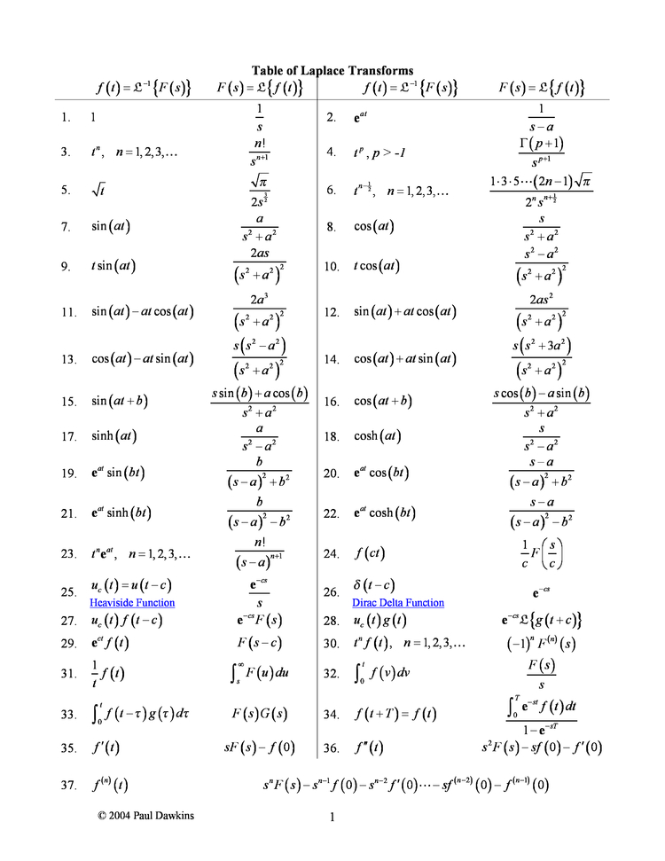
Finding Time Domain Output
- Transform and into Laplace domain
- Find product
- Take inverse Laplace transform
Input as Delta Function
Then , so .
Input as Step Function
Then , so .
LTI System Properties
LTI = Linear Time Invariant.
- LTI systems are linear. Given system and signals , etc
- LIT is Additive:
- LTI is scalable (or homogeneous)
- LTI is time-invariant, ie, if output then:
3 - Poles and Zeros
General Transfer Function as 2 polynomials
Factorised Transfer Function
Is factorised and rewrite as a ratio of products:
Real system as real
Where the numerator i a th order polynomial with coefficients s and the denominator is a th order polynomial with coefficients s. For a system to be real, the order of the numerator polynomial must be no greater than the order of the denominator polynomial, ie: .
Zero Definition
Roots z of the numerator. When any ,
Pole Definition
Poles p of the denominator. When any , approaches
Transfer Function Gain
K is the overall transfer function gain. (Coefficient of and is 1.)
Stable System
A system is considered stable if its impulse response tends to zero or a finite value in the time domain.
Requires all real components to be negative (on the left hand side of the complex s-plane of a pole-zero plot (left if the imaginary s axis)).
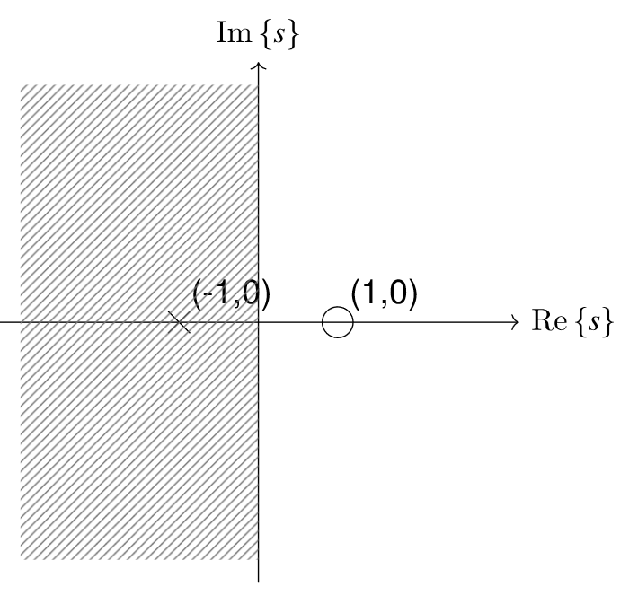
Components to Response
Real Components Exponential Response Imaginary angular frequency of oscillating responses.
4 - Analog Frequency Response
Frequency Response
Frequency response of a system = output in response to sinusoid input of unit magnitude and specified frequency, . Response is measured as magnitude and phase angle.
Continuous Fourier Transform
Laplace transform evaluated on the imaginary s-axis at some frequency .
radial frequency,
Inverse Fourier Transform
Magnitude of Frequency Response (MFR)
In words, the magnitude of the frequency response (MFR) is equal to the gain multiplied by the magnitudes of the vectors corresponding to the zeros, divided by the magnitudes of the vectors corresponding to the poles.
Phase Angle of Frequency Response (PAFR) -
Phase Angle of Frequency Response (PAFR) -
In words, the phase angle of the frequency response (PAFR) is equal to the sum of the phases of the vectors corresponding to the zeros, minus the sum of the phases of the vectors correspond to the poles, plus if the gain is negative.
Each phase vector is measured from the positive real s-axis (or a line parallel to the real s-axis if the pole or zero is not on the real s-axis).
5 - Analog Filter Design
Ideal Filters
Each ideal filter has unambiguous pass bands, which are ranges of frequencies that pass through the system without distortion, and stop bands, which are ranges of frequencies that are rejected and do not pass through the system without significant loss of signal strength. The transition band between stop and pass bands in ideal filters has a size of 0; transitions occur at single frequencies.

Realisability
System starts to respond to input before input is applied. Non-zero for .
Causality
Output depends only on past and current inputs, not future inputs.
Realising Filters
Realise as we seek smooth behaviour.
- Drop for ()
- Would not get suitable behaviour in frequency domain, as discarded 50% of system energy
- But can tolerate delays
- So shift sinc to the right
- Time domain shift = scaling by complex exponential in laplace
- True in fourier transform, so delay in time maintains magnitude but changes phase of frequency response
- Truncate
- As can't wait for infinity, so truncate impulse response.
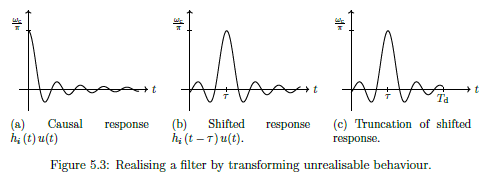
Gain (linear dB)
Gain (dB linear)
Transfer Function of Nth Order Butterworth Low Pass Filter
Butterworth = Maximally flat in pass band (freq response magnitudes are flat as possible for given order)
- = nth pole
- =
- =
- Form semi-circle to left of imaginary s-axis
- = half-power cut-off frequency
- Frequency where filter gain is or
Frequency Response of common Low pass Butterworth filter
Increasing order improves approximation of ideal behaviour 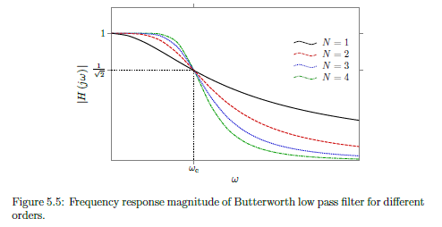
Normalised Frequency Response of common Low pass Butterworth filter
To convert normalised frequency form to non-normalised = multiply by the actual
Minimum Order for Low Pass Butterworth
Round up as want to over-satisfy not under-satisfy
Low pass Butterworth Cut-off frequency (Pass)
Gain in dB
Low pass Butterworth Cut-off frequency (Stop)
Gain in dB
6 - Periodic Analogue Functions
Exponential Representation from Trigonometric representation
Trigonometric from exponential - Real (cos)
Trigonometric from exponential - Imaginary (cos)
Fourier Series
Period signal = sum of complex exponentials.
Fundamental frequency , such that all frequencies in signal are multiples of .
Fundamental period
Fourier spectra only exist at harmonic frequencies (ie integer multiples of fundamental frequency)
Fourier Coefficients
Important property of Fourier series is how is represents real signals .
- Even magnitude spectrum
- Odd phase spectrum =
Fourier Series of Periodic Square Wave (Example)
Where
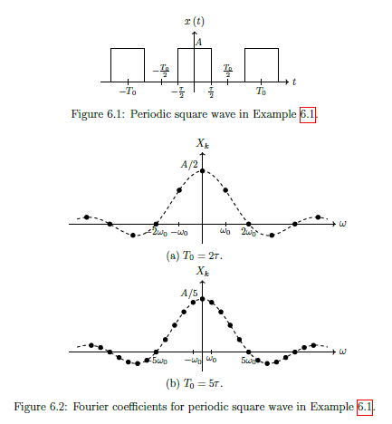
Output of LTI system from Signal with multiple frequency components
Or in other words:
The output of an LTI system due to a signal with multiple frequency components can be found by superposition of the outputs due to the individual frequency components. IE system will change amplitude and phase of each frequency in the input.
Filtering Periodic Signal (Example 6.2)
See example 6.2 below...

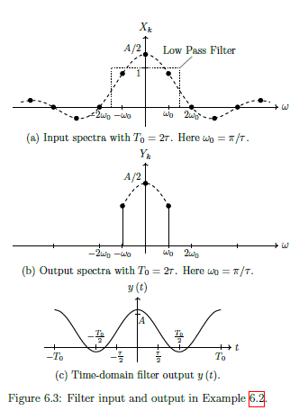
7 - Computing with Analogue Signals
This topic isn't examined as it is MATLAB
8 - Signal Conversion between Analog and Digital
Digital Signal Processing Workflow
See diagram:

- Low pass filter applied to time-domain input signal to limit frequencies
- An analogue-to-digital converter (ADC) samples and quantises the continuous time analogue signal to convert it to discrete time digital signal .
- Digital signal processing (DSP) performs operations required and generates output signal .
- A digital-to-analogue converter (DAC) uses hold operations to reconstruct an analogue signal from
- An output low pass filter removes high frequency components introduced by the DAC operation to give the final output .
Sampling
Convert signal from continuous-time to discrete-time. Record amplitude of the analogue signal at specified times. Usually sampling period is fixed.
Oversample
Sample too often, use more complexity, wasting energy
Undersample
Not sampling often enough, get aliasing of our signal (multiple signals of different frequencies yield the same data when sampled.)
Aliasing
Multiple signals of different frequencies yield the same data when sampled.

If we sample the black sinusoid at the times indicated with the blue marker, it could be mistaken for the red dashed sinusoid. This happens when under-sampling, and the lower signal is called the alias. The alias makes it impossible to recover the original data.
Nyquist Rate
Minimum ant-aliasing sampling Frequency.
Frequencies above this remain distinguishable.
Quantisation
The mapping of continuous amplitude levels to a binary representation.
IE: bits then there are quantisation levels. ADC Word length .
Continuous amplitude levels are approximated to the nearest level (rounding). Resulting error between nearest level and actual level = quantisation noise

Data Interpolation
Convert digital signal back to analogue domain, reconstruct continous signal from discrete time series of points.
Hold Circuit
Simplest interpolation in a DAC, where amplitude of continuous-time signal matches that of the previous discrete time signal.
IE: Hold amplitude until the next discrete time value. Produces staircase like output.

Resolution
Space between levels, often represented as a percentage.
For -bit DAC, with uniform levels
Dynamic range
Range of signal amplitudes that a DAC can resolve between its smallest and largest (undistorted) values.
9 - Z-Transforms and LSI Systems
LSI Rules
Linear Shift-Invariant
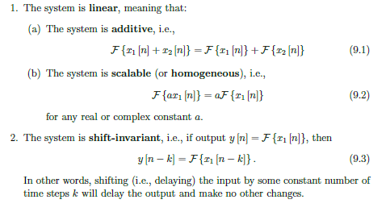
Common Components of LSI Systems
For digital systems, only need 3 types of LSI circuit components.

- A multiplier scales the current input by a constant, i.e., .
- An adder outputs the sum of two or more inputs, e.g., .
- A unit delay imposes a delay of one sample on the input, i.e, .
Discrete Time Impulse Function
Impulse response is very similar in digital domain, as it is the system output when the input is an impulse.
Impulse Response Sequence
LSI Output
Discrete Convolution of input signal with the impulse response.
Z-Transform
Converts discrete-time domain function into complex domain function , in the z-domain Assume is causal, ie
Discrete time equivalent to Laplace Transform. However can be written by direct inspection (as have summation instead of intergral). Inverse equally as simple.
Z-Transform Examples
Simple examples...
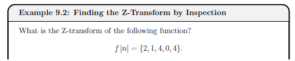

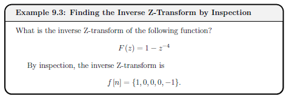
Binomial Theorem for Inverse Z-Transform
Cannot always find inverse Z-tranform by immediate inspection, in particular if the Z-transform is written as a ratio of polynomials of z. Can use Binomial theorem to convert into single (sometimes infinite length) polynomial of
 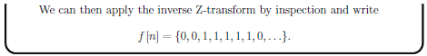
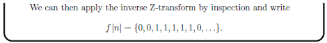
Z-Transform Properties
Linearity, Time Shifting and Convolution

Sample Pairs
See example

Z-Transform of Output Signal
Where = Pulse Transfer Function (as it is also the system output when the time-domain input is a unit impulse.) but by convention can refer to as the Transfer Function
Finding time-domain output of an LSI System
Transform, product, inverse.
- Transform and into z-domain
- Find product
- Taking the inverse Z-transform of
Difference Equation
Time domain output directly as a function of time-domain input as well as previous time-domain outputs (ie can be feedback).
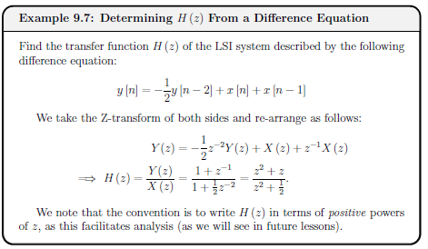
Z-Transform Table
See table...
 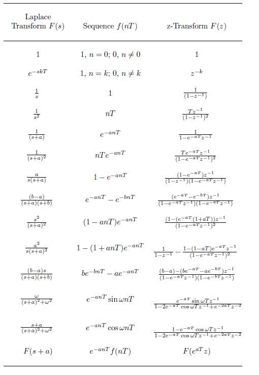
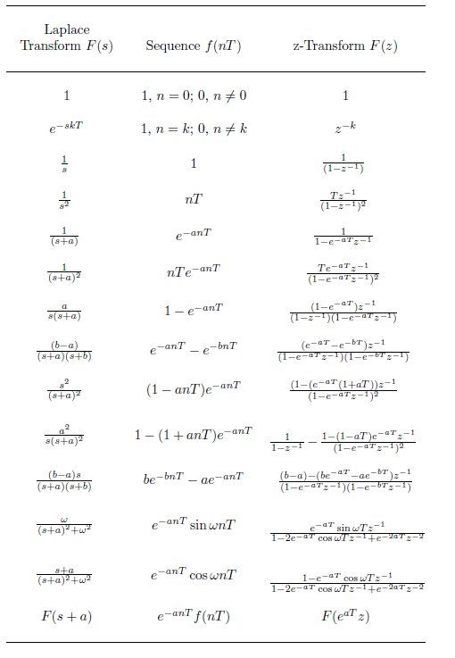
10 - Stability of Digital Systems
Z-Domain Transfer Function
Negative powers of z.
No constraint on and to be real (unlike analogue) but often assume
General Difference Equation
Poles and Zeros of Transfer Function
- Coefficient of each in this form is 1.
- Poles and zeros carry same meaning as analogue
- Unfortunately symbol for variable and zeros are very similar (take care)
- Insightful to plot
 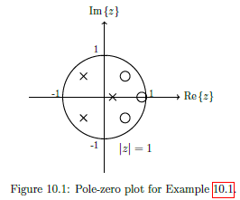
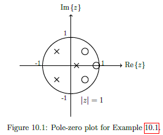
Bounded Input and Bounded Output (BIBO) Stability
Stable if bounded input sequence yields bounded output sequence.
A system is BIBO stable if all of the poles lie inside the unit circle
A system is Conditionally stable if there is atleast 1 pole directly on the unit circle.

Explanation:
- An input sequence is bounded if each element in the sequence is smaller than some value .
- An output sequence corresponding to is bounded if each element in the sequence is smaller than some value .
11 - Digital Frequency Response
LSI Frequency Response
Output in response to a sinusoid input of unit magnitude and some specified frequency. Shown in two plots (magnitude and phase) as a function of input frequency.
Discrete-Time Fourier Transform (DTFT) - Digital Frequency Response
Where angle is the angle of th unit vector measured from the positive real -axis. Denotes digital radial frequency, measured in radians per sample
as spectrum of (frequency response).
Convention of writing DTFT includes or simply
Derivation: Using Z-Transform Definition.
Let be polar coords (), ie magnitude to r, angle . Hence rewrite
Then let , so that any point lies on the unit circle.
Inverse Discrete-Time Fourier Transform (Inverse DTFT)
LSI Transfer Function
is a function of vectors from the system's poles and zeros to the unit circle at angle .Thus from pole-zero plot, can geometrically determine magnitude and phase of frequency response.
Magnitude of Frequency Response (MFR)
In words, the magnitude of the frequency response (MFR) is equal to the gain multiplied by the magnitudes of the vectors corresponding to the zeros, divided by the magnitudes of the vectors corresponding to the poles.
Repeats every as Eulers Formula. Due to symettery of poles and zeros about real -axis, frequency response is symmetric about , so only need to find over one interval of
Phase Angle of Frequency Response (PAFR) -
In words, the phase angle of the frequency response (PAFR) is equal to the sum of the phases of the vectors corresponding to the zeros, minus the sum of the phases of the vectors correspond to the poles, plus if the gain is negative.
Repeats every as Eulers Formula. Due to symettery of poles and zeros about real -axis, frequency response is symmetric about , so only need to find over one interval of
Example 11.1 - Simple Digital High Pass Filter
See image...


12 - Filter Difference equations and Impulse responses
Z-Domain Transfer Function
General Difference Equation
Real coefficients and are the same. (Note = 1, so no coefficient corresponding to ).
Easier to convert directly between transfer function (with negative powers of z) and the difference equation for output , ideal for implementation of the system. (rather than use time-domain impulse response )
Example 12.1 Proof y[n] can be obtained directly from H[z]
See image...

Order of a filter
Taps in a filter
Minimum number of unit delay blocks required. Equal to the order of the filter.

Example 12.2 Filter Order and Taps
See example...
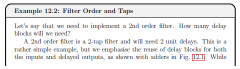

Tabular Method for Difference Equations
Given a difference equation, and its input x[n], can write specific output y[n] using tabular method.
- Starting with input , make a column for every input and output that appears in difference equation
- ASsume every output and delayed input is initially zero (ie the filter is causal, initially no memory, hence system is quiescent)
- Fill in column for with given system input for all rows needed, and fill in delayed versions of
- Evaluate from inital input, and propagate the value of y[0] to delayed outputs (as relavent)
- Evaluate from s and
- Continue evaluating output and propagating delayed outputs.
Can be alternative method for finding time-domain impulse response
Example 12.3 Tabular Method Example
See example


Infinite Impulse Response (IIR) Filters
IIR filters have infinite length impulse responses because they are recursive (ie feedback terms associated with non-zero poles in transfer function, hence exists.)
Standard transfer function and difference equation can be used to represent.
Not possible to have a linear phase response (so there are different delays associated with different frequencies, and they are not always stable (depending on the exact locations of poles.))
IIR filters are more efficient than FIR designs at controlling gain of response.
Although response is technically infinite, in practice decays towards zero or can be truncated to zero (assume response is beyond some value )
Example 12.4 IIR Filter
See example


Finite Impulse Response (FIR) Filters
FIR Filter are none recursive (ie, no feedback components), so a[k] = 0 for k!=0.
Finite in length, and strictly zero beyond that ( for ). Therefore the number of filter taps dictates the length of an FIR impulse response
Since there is no feedback, can write impulse response as:
FIR Difference Equation
FIR Transfer function
Simplified from general differernce equation tranfer function.
FIR Transfer Function - Roots
More convenient to work with positive powers of z, so multiply top and bottom by then factor.
FIR Stability
FIR FILTERS ARE ALWAYS STABLE. As in transfer function, all M poles are all on the origin (z =0) and so always in the unit circle.
FIR Linear Phase Response
Often have a linear phase response. The phase shift at the output corresponds to a time delay.
FIR Filter Example
See example 12.5
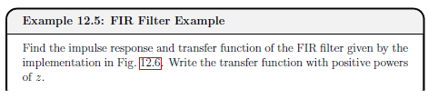

Ideal Digital Filters
Four main types of filter magnitude responses (defined over , mirrored over and repeated every )
- Low Pass - pass frequencies less than cut-off frequency and reject frequencies greater.
- High Pass - rejects frequencies less than cut-off frequency and pass frequencies greater.
- Band Pass - Passes frequency within specified range, ie between and , and reject frequencies that are either below or above the band within
- Band Stop - Rejects frequency within specified range, ie between and , and passes all other frequencies within
Ideal response appear to be fundamentally different from ideal analogue, however we only care over fundamental band where behaviour is identical

Realising Ideal Digital Filters
Use poles and zeros to create simple filters. Only need to consider response over the fixed band.
Key Concepts:
-
To be physically realisable, complex poles and zeros need to be in conjugate pairs
-
Can place zeros anywhere, so will often place directly on unit circle when frequency / range of frequency needs to be attenuated
-
Poles on the unit circle should generally be avoided (conditionally stable). Can try to keep all poles at origin so can be FIR, otherwise IIR, so feedback. Poles used to amplify response in the neighbourhood of some frequency.
-
Low Pass - zeros at or near , poles near which can amplify maximum gain, or be used at a higher frequency to increase size of pass band.
-
High Pass - literally inverse of low pass. Zeros at or near , poles near which can amplify maximum gain, or be used at a lower frequency to increase size of pass band.
-
Band Pass - Place zeros at or near both and ; so must be atleast second order. Place pole if needed to amplify the signal in the neighbourood of the pass band.
-
Band Stop - Place zeros at or near the stop band. Zeros must be complex so such a filter must be atelast second order. Place poles at or near both and if needed.
Example 12.6 - Simple High Pass Filter Design
See diagram


13 - FIR Digital Filter Design
Discrete Time Radial Frequency
As long as - otherwise there will be an alias at a lower frequency. So to avoid aliasing.
Realising Ideal Digital Filter
Aim is to get as close as possible to ideal behaviour. But when using Inverse DTFT, the ideal impulse response is .
This is analogous to the inverse Fourier transform of the ideal analogue low pass frequency response.
Sampled a scaled sinc function, non-zero values for . So needs to respond to an input before the input is applied, thus unrealisable.

Practical Digital Filters
Good digital low pass filter will try to realise the (unrealisable) ideal response. Will try to do this with FIR filters (always stable, tend to have greater flexibility to implement different frequency responses).
- Need to induce a delay to capture most of the ideal signal energy in causal time, ie: use
- Truncate response to delay tolerance , such that for . Also limits complexity of filter: shorter = smaller order
- Window response, scales each sample, attempt to mitigate negative effects of truncation
Windowing
Window Method - design process: start with ideal and windowing infinite time-domain response to obtain a realsiable that can be implemented.


Windowing Criteria
- Main Lobe Width - Width in frequency of the main lobe.
- Roll-off rate - how sharply main lobe decreases, measured in dB/dec (db per decade).
- Peak side lobe level - Peak magnitude of the largest side lobe relative to the main lobe, measured in dB.
- Pass Band ripple - The amount the gain over the pass band can vary about unity and
- Pass Band Ripple Parameter, dB-
- Stop Band ripple - Gain over the stop band, must be less than the stop band ripple
- Transition Band -
Practical FIR Filter Design Example 13.2
See example...
 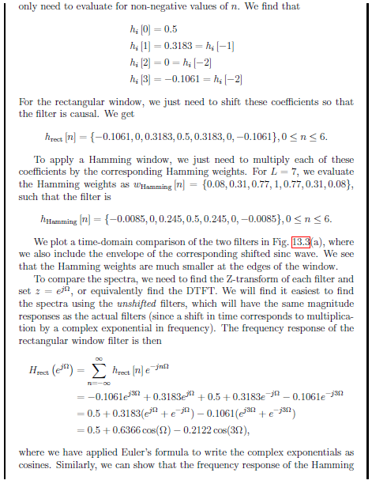
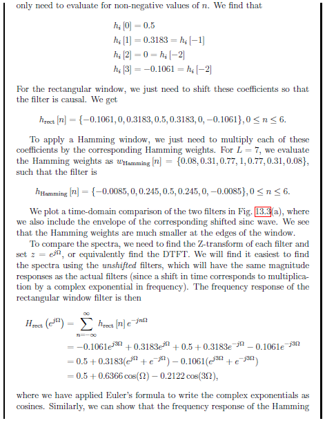

Specification for FIR Filters Example 13.3
See example...
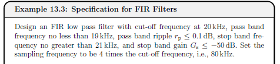

14 - Discrete Fourier Transform and FFT
Discrete Fourier Transform DFT
For
This is Forward discrete Fourier transform. (Not discrete time transform, but samples of it over interval
Explanation:
Discrete-time Fourier Transfomr (DTFT), takes discrete time signal, provides continous spectrem that repeats every . Defined for infinite length sequency , gives continous spectrum with values at all frequencies.
Digital often has finite length sequences. (Also inverse DTFT, uses intergration thus approximated). So assume sequence is length .
Sample spectrum . Repeats every , can sample over .
Take same number of samples in frequency domain as length of time domain signal.So evenly spaced samples of . (Aka bins)
Occur at fundemental frequency
Substitude into the DTFT.
For
Inverse DFT
Example 14.1 DFT of Sinusoid
See example
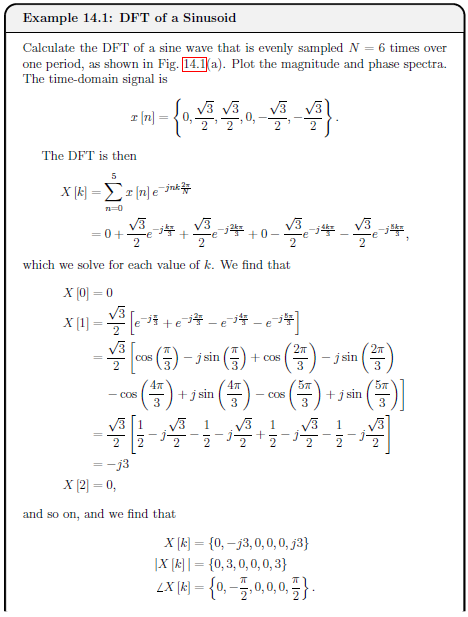 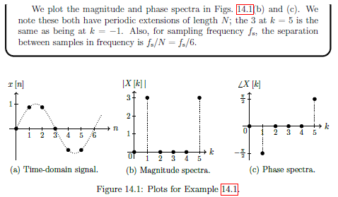
Zero Padding
Artificially increase the length of the time domain signal by adding zeros to the end to see more detail in the DTFT as DFT provides sampled view of DTFT, only see DTFT at frequencies.
Example 14.2 Effect of Zero Padding
See example
 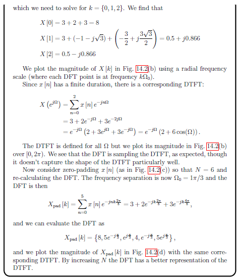
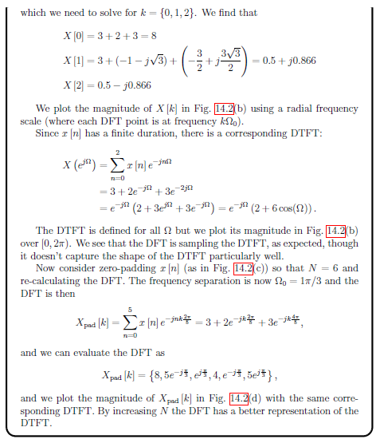

Fast Fourier Transform FFT
Family of alogrithms that evaluate DFT with complexity of compared to . Achieved with no approximations.
Details are beyond module, but can be used in matlab with fft function.
15 - Computing Digital Signals
This topic isn't examined as it is MATLAB